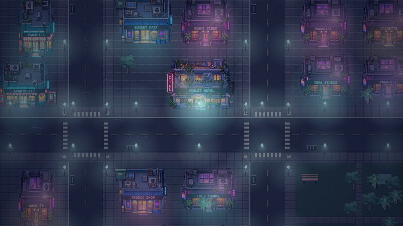
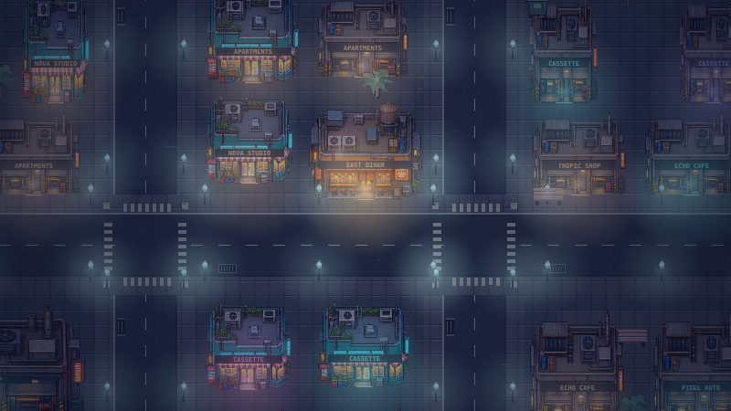
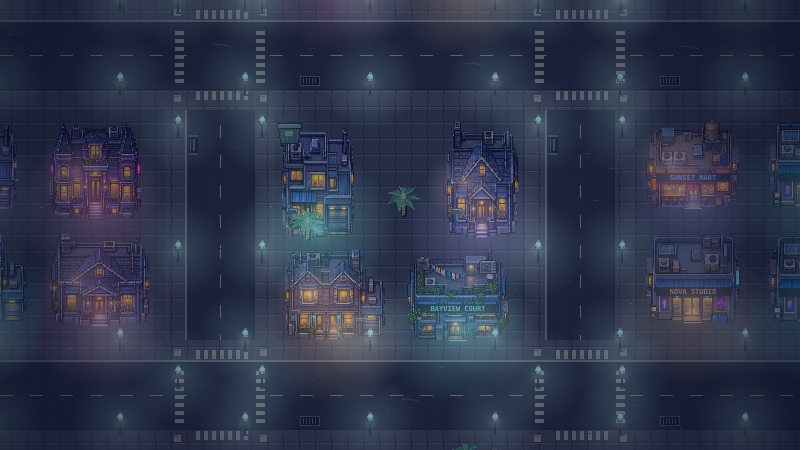
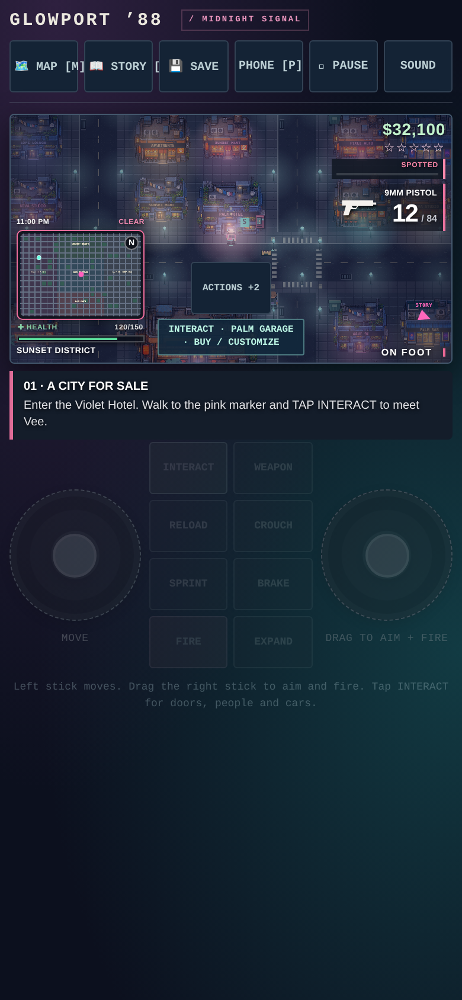
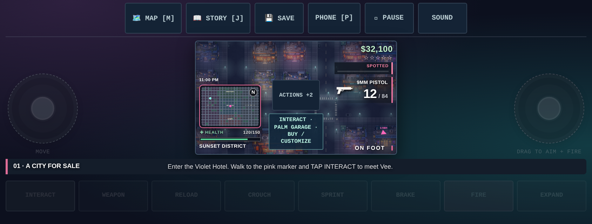
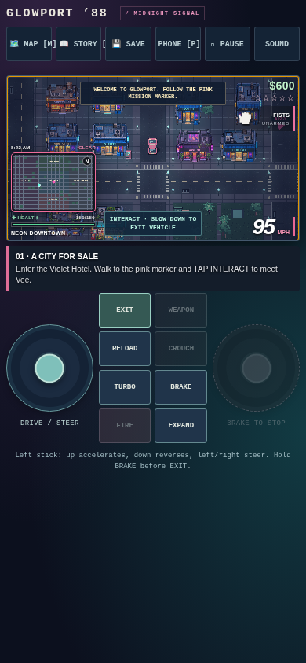
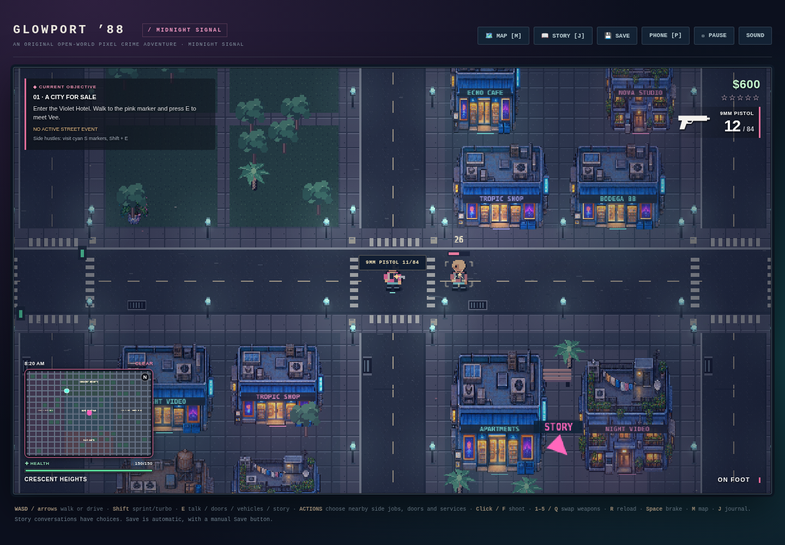
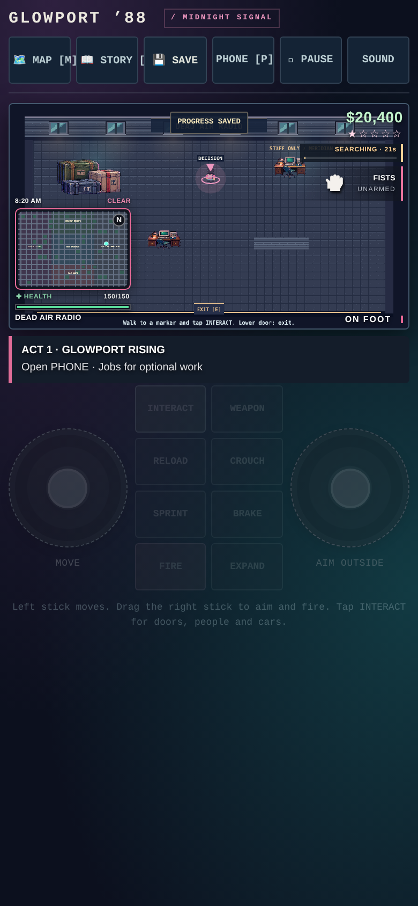

Fixed-camera comparisons against verified 0.6.5. Static city artwork remains pixel-identical. Runtime feedback is shown separately below.
Play the browser demo · Implementation and test report · Visual measurements










Checks use Chromium and touch emulation. Physical phones, Safari, difficulty balance and uninterrupted human campaign duration remain unverified.